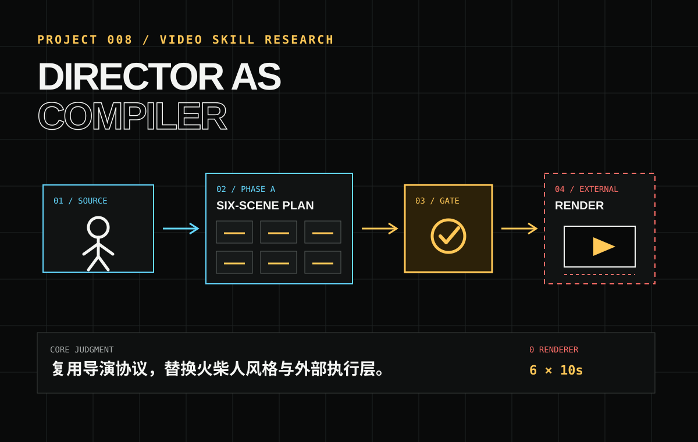

成果先运行
研究先交付可运行、可检查的真实成果，而不是只保留概念图和描述。
PLAYABLE WORK · PRODUCT RESEARCH · ASSET SYSTEMS · REFERENCE CORPUS · DOCUMENT STRUCTURING · VIDEO DIRECTING
这个研究库一边交付可运行成果，一边记录它们如何被构建、验证并抽象成下一阶段可复用的产品能力。

PROJECT 008 · REAL OUTPUT ADDED 观看 CLIP 01–02 二十秒外部实测 ↗研究先交付可运行、可检查的真实成果，而不是只保留概念图和描述。
明确区分事实、观察、推断和决策，让后续研究能够复查和修正。
从单次项目提炼协议、工作流、评价维度和下一阶段的产品路线。
PROJECT INDEX
正在读取项目索引…